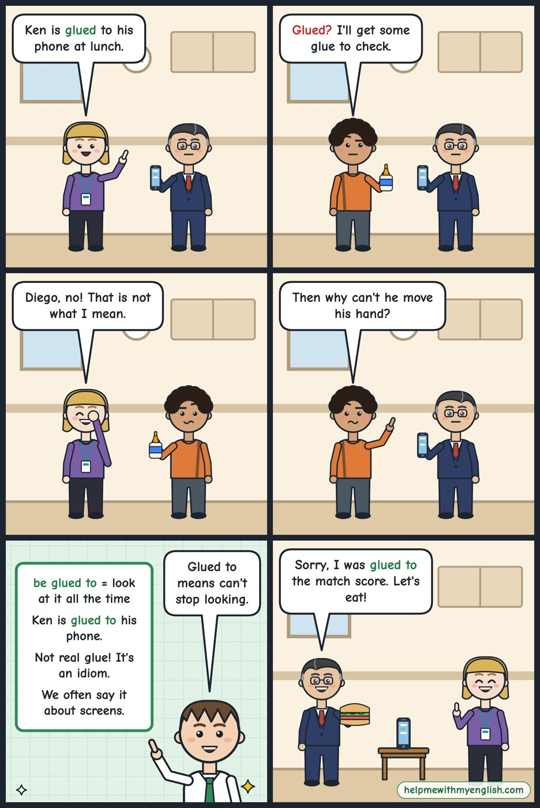

be glued to
To look at something all the time and not stop.
My brother is glued to his phone all day.
Tip: Use 'be glued to' + a screen or thing (a phone, the TV, a laptop); it's usually said with mild criticism, so it's best with people you know well.
Hear it in conversation
Workbook
1. What does it mean?
In this conversation, what does 'was glued to the match' mean?
2. Fill the gap
Amira has been her laptop since breakfast, trying to finish her report before the deadline.
3. Choose the best reply
Mei: I tried to have a chat with Diego at lunch, but he kept looking at his tablet.
4. Your turn: speak
Do you think people spend too much time on their devices? Why or why not?
Show an example answer
I think many people do, myself included sometimes. On my commute, almost everyone is glued to their phone, and nobody talks or even looks around. I try to put mine away during meals so I can really enjoy the time with my family.
Answer key: be glued to
- 1. D. Watched the match without looking away
- 2. glued to
- 3. C. I know! He's glued to that tablet every time we eat together.
- 4. Example: I think many people do, myself included sometimes. On my commute, almost everyone is glued to their phone, and nobody talks or even looks around. I try to put mine away during meals so I can really enjoy the time with my family.
See it in a comic
